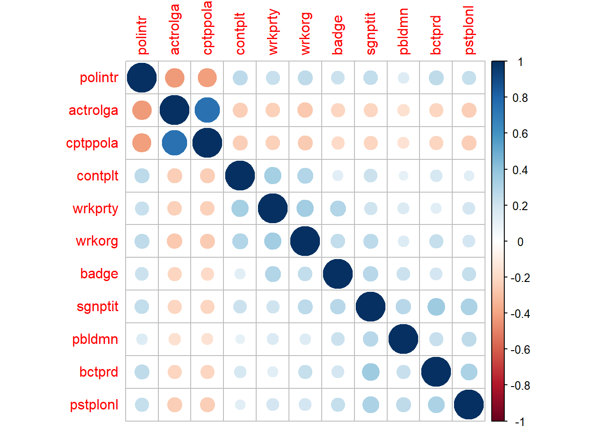

##Arbeitsverzeichnis checken
getwd()[1] "C:/Users/antje/Documents/studium PUK/Master-Publizistik/STUDIENASSISTENZ/Test Tutorial"Dieses Tutorial gibt eine Einführung in die explorative Faktorenanalyse (Hauptkomponentanalyse). Sie lernen, wie man:
Wie immer prüfen wir zuerst mit “getwd()”, unter welchem Pfad unser Arbeitsverzeichnis ist. Alle Skripte und Datensätze, mit denen wir arbeiten wollen, sollten in diesem Ordner abgelegt sein.
##Arbeitsverzeichnis checken
getwd()[1] "C:/Users/antje/Documents/studium PUK/Master-Publizistik/STUDIENASSISTENZ/Test Tutorial"Dann laden wir wieder mit dem Paket “pacman” die nötigen R-Pakete.
##Pakete installieren und laden
if (!require("pacman")) {install.packages("pacman"); library(pacman)}Lade nötiges Paket: pacmanp_load(tidyverse, car, corpcor, corrplot, psych, GPArotation)Für diese Übung verwenden wir wieder den Datensatz aus dem European Social Survey: ESS Round 8 (2016): integrated file, edition 2.2, zu finden unter: https://ess-search.nsd.no/en/study/f8e11f55-0c14-4ab3-abde-96d3f14d3c76
#Datensatz laden
df <- read.csv("ESS8e02_3.csv")Dieses Mal erstellen wir einen gefilterten Datensatz für die österreichischen Befragten mit den folgenden Variablen: - How interested in politics (polintr) - Able to take active role in political group (actrolga) - Confident in own ability to participate (cptppola) - Contacted politician or government official last 12 months (contplt) - Worked in political party or action group last 12 months (wrkprty) - Worked in another organisation or association last 12 months (wrkorg) - Worn or displayed a campaign badge/sticker last 12 months (badge) - Signed petition last 12 months (sgnptit) - Taken part in lawful public demonstration last 12 months (pbldmn) - Boycotted certain products last 12 months (bctprd) - Posted or shared anything about politics online last 12 months (pstplonl)
#Fälle filtern und Variablen auswählen
df1 <- df %>%
filter(cntry == "AT") %>%
dplyr::select(polintr, actrolga, cptppola, contplt, wrkprty, wrkorg, badge, sgnptit, pbldmn, bctprd, pstplonl)#Datensatz inspizieren
glimpse(df1)
class(df1)
head(df1)
View(df1)Als nächstes definieren wir wieder die fehlenden/ungültigen Werte als “NA”. Um diese Werte zu identifizieren, hilft uns wieder ein Blick ins zugehörige Codebuch. Wir sehen, dass glücklicherweise für alle elf Variablen die fehlende Werte in der gleichen Weise codiert sind: 7 = refusal, 8 = don’t know, 9 = no answer. Somit können wir alle Werte im Datensatz mit nur einer Codezeile entsprechend umkodieren.
Wir verwenden hierzu die Funktion mutate_all() aus dem Paket dplyr, welches zum Tidyverse gehört. Die Anweisung “~ifelse(. %in% c(7, 8, 9), NA, .)” überprüft, ob jeder Wert in den Variablen entweder 7, 8 oder 9 ist. Ist dies der Fall, wird der Wert durch NA ersetzt; andernfalls wird der ursprüngliche Wert beibehalten. Alternativ können wir vorgehen wie in Übung 5 und für jede Variable die “Recode” Funktion anwenden. Dies ist ein wenig Fleißarbeit, funktioniert aber genauso.
#Fehlende Werte umkodieren
df1 <- df1 %>%
mutate_all(~ifelse(. %in% c(7, 8, 9), NA, .))Wir prüfen mit View(), ob es funktioniert hat.
View(df1)Für die weiteren Analysen schließen wir die Fälle mit fehlenden Werten aus. Dies erreichen wir wieder mit der Funktion “drop_na”. Wir wenden sie auf den gesamten Datensatz an, da wir alle Fälle mit fehlenden Werten in einer unserer Variablen ausschließen. Mit View() können wir uns den gefilterten Datensatz ansehen und überprüfen, ob es geklappt hat.
#Fälle mit fehlenden Werten ausschließen
df1 <- drop_na(df1)Wir verwenden den Datensatz in Übung 9 wieder. Deshalb exportieren wir ihn hier in ein .csv-File und alternativ in einen .RData-File.
#Datensatz speichern
write.csv(df1, file = "ESS8e02_3_AT_PCA.csv")
save(df1, file = "df1.RData")Als erstes lassen wir uns mit der Funktion “cor” die Korrelationsmatrix ausgeben und weisen diese einem neuen Objekt “R_df1” zu. Die Korrelationsmuster sind leichter zu erkennen, wenn wir die Matrix mit der Funktion “corrplot” grafisch veranschaulichen. Eine Faktorenanalyse ist nur sinnvoll, wenn die verschiedenen Variablen auch miteinander korrelieren (r > 0), aber nicht zu stark (r > 0.9), denn wenn zwei Variablen perfekt miteinander korrelieren, messen sie vermutlich dasselbe Konstrukt.
#Tabelle
R_df1 <- df1 %>%
cor(.)%>%
round(., 2)#auf zwei Kommastellen gerundet ist es übersichtlicher
R_df1 polintr actrolga cptppola contplt wrkprty wrkorg badge sgnptit pbldmn
polintr 1.00 -0.43 -0.42 0.26 0.22 0.25 0.21 0.24 0.15
actrolga -0.43 1.00 0.74 -0.25 -0.24 -0.27 -0.22 -0.22 -0.17
cptppola -0.42 0.74 1.00 -0.25 -0.24 -0.26 -0.20 -0.22 -0.16
contplt 0.26 -0.25 -0.25 1.00 0.33 0.29 0.13 0.21 0.10
wrkprty 0.22 -0.24 -0.24 0.33 1.00 0.34 0.29 0.20 0.16
wrkorg 0.25 -0.27 -0.26 0.29 0.34 1.00 0.24 0.26 0.15
badge 0.21 -0.22 -0.20 0.13 0.29 0.24 1.00 0.27 0.21
sgnptit 0.24 -0.22 -0.22 0.21 0.20 0.26 0.27 1.00 0.27
pbldmn 0.15 -0.17 -0.16 0.10 0.16 0.15 0.21 0.27 1.00
bctprd 0.25 -0.22 -0.22 0.17 0.13 0.23 0.18 0.35 0.22
pstplonl 0.23 -0.25 -0.25 0.12 0.18 0.18 0.23 0.31 0.25
bctprd pstplonl
polintr 0.25 0.23
actrolga -0.22 -0.25
cptppola -0.22 -0.25
contplt 0.17 0.12
wrkprty 0.13 0.18
wrkorg 0.23 0.18
badge 0.18 0.23
sgnptit 0.35 0.31
pbldmn 0.22 0.25
bctprd 1.00 0.31
pstplonl 0.31 1.00#Grafik
corrplot(R_df1)
In unserem Fall weist die Korrelationsmatrix durchgängig schwache bis moderate Korrelationen ( 0.1 < r < 0.5) auf. Mit dem Bartlett-Test prüfen wir, ob die Korrelationsmatrix signifikant von einer Einheitsmatrix abweicht, in der alle Korrelationen 0 sind. Hierzu wenden wir die Funktion “cortest.bartlett” auf unsere R-Matrix an. Hier müssen wir zusätzlich die Größe der Stichprobe, also die Anzahl der Fälle in unserem Datensatz als Argument angeben. Alternativ können wir die Funktion auch direkt auf unseren Datensatz “df1” anwenden. Die Warnung, die R uns nun ausgibt, können wir ignorieren.
Zusätzlich berechnen wir die Kaiser-Meyer-Olkin-Maße (KMO) der Stichprobenadäquanz (MSA = Measure of Sampling Adequacy) für die Variablen. Sie zeigen an, ob für jeden Faktor genügend Daten vorhanden sind, um zuverlässige Ergebnisse für die Faktorenanalyse zu erhalten. Die Werte sollten mindestens > 0.5 sein.
#Bartlett (sollte signifikant sein, p<0.05)
cortest.bartlett(R_df1, n = 1868)#berechnet auf Grundlage der R-Matrix$chisq
[1] 4342.212
$p.value
[1] 0
$df
[1] 55cortest.bartlett(df1)#alternativ:berechnet direkt aus den DatenR was not square, finding R from data$chisq
[1] 4348.039
$p.value
[1] 0
$df
[1] 55#KMO (Werte sollten min. > 0.5 sein)
KMO(R_df1)Kaiser-Meyer-Olkin factor adequacy
Call: KMO(r = R_df1)
Overall MSA = 0.81
MSA for each item =
polintr actrolga cptppola contplt wrkprty wrkorg badge sgnptit
0.91 0.72 0.72 0.84 0.82 0.88 0.86 0.85
pbldmn bctprd pstplonl
0.87 0.85 0.87 Der Bartlett-Test ist signifikant, d.h. die Korrelationen unterscheiden sich insgesamt signifikant von Null. Die MSA-Werte nach KMO sind alle größer als 0.7, womit sie im guten Bereich liegen. Aus den Ergebnissen können wir schließen, dass sich unsere Daten grundsätzlich für eine Faktorenanalyse eignen.
Wir führen zunächst eine Hauptkomponentenanalyse (Principal Component Analysis, PCA) ohne Rotation durch, um eine Entscheidung zu treffen, wie viele Faktoren (Komponenten) wir extrahieren wollen. Wir nutzen dazu die Funktion “principal” aus dem “psych”-Paket und setzen die Anzahl der Faktoren (nfactors) gleich der Anzahl der Variablen (=Länge des Datenvektors; length(df1)) sowie die Rotationsmethode (rotate) auf “none”. Als Basis verwenden wir die Korrelationsmatrix “R_df1”. Man kann jedoch ebenso direkt den Datensatz “df1” verwenden.
Außerdem erstellen wir mit der Funktion “plot” einen Screeplot, in dem wir die Eigenwerte für die Faktoren darstellen. Mit “abline(h=1)” fügen wir eine horizontale Linie beim Wert 1 hinzu, um das Kaiser-Kriterium (Eigenwert h > 1) besser überprüfen zu können.
# Unrotierte PCA
pc1 <- principal(R_df1, nfactors = length(df1), rotate="none")
pc1Principal Components Analysis
Call: principal(r = R_df1, nfactors = length(df1), rotate = "none")
Standardized loadings (pattern matrix) based upon correlation matrix
PC1 PC2 PC3 PC4 PC5 PC6 PC7 PC8 PC9 PC10 PC11 h2
polintr 0.62 -0.26 -0.14 0.10 0.08 -0.09 0.33 0.51 0.35 -0.13 0.01 1
actrolga -0.70 0.49 0.28 0.12 0.04 0.04 0.09 0.17 0.10 -0.01 0.36 1
cptppola -0.69 0.50 0.28 0.11 0.04 0.02 0.10 0.19 0.11 0.01 -0.36 1
contplt 0.49 -0.16 0.48 0.39 -0.27 0.18 0.32 -0.11 -0.08 0.35 0.00 1
wrkprty 0.53 -0.01 0.57 -0.20 -0.06 0.26 -0.07 0.07 -0.17 -0.49 -0.01 1
wrkorg 0.56 0.02 0.41 0.12 0.12 -0.29 -0.55 0.07 0.24 0.18 0.01 1
badge 0.50 0.26 0.17 -0.56 0.38 -0.14 0.27 0.01 -0.15 0.27 0.01 1
sgnptit 0.57 0.42 -0.06 0.19 0.08 -0.18 0.20 -0.49 0.28 -0.25 0.00 1
pbldmn 0.42 0.44 -0.17 -0.27 -0.69 -0.16 -0.05 0.13 0.00 0.05 0.00 1
bctprd 0.52 0.35 -0.24 0.46 0.17 -0.13 -0.06 0.20 -0.50 -0.06 0.00 1
pstplonl 0.53 0.34 -0.30 -0.01 0.13 0.65 -0.17 0.03 0.18 0.16 0.00 1
u2 com
polintr 4.4e-16 4.1
actrolga 1.1e-15 3.1
cptppola -8.9e-16 3.2
contplt 1.2e-15 6.0
wrkprty 1.1e-16 4.0
wrkorg 2.2e-16 4.3
badge 1.1e-16 5.0
sgnptit -6.7e-16 4.9
pbldmn -2.2e-16 3.3
bctprd -6.7e-16 5.1
pstplonl 7.8e-16 3.6
PC1 PC2 PC3 PC4 PC5 PC6 PC7 PC8 PC9 PC10 PC11
SS loadings 3.48 1.26 1.11 0.88 0.78 0.71 0.69 0.64 0.62 0.58 0.26
Proportion Var 0.32 0.11 0.10 0.08 0.07 0.06 0.06 0.06 0.06 0.05 0.02
Cumulative Var 0.32 0.43 0.53 0.61 0.68 0.75 0.81 0.87 0.92 0.98 1.00
Proportion Explained 0.32 0.11 0.10 0.08 0.07 0.06 0.06 0.06 0.06 0.05 0.02
Cumulative Proportion 0.32 0.43 0.53 0.61 0.68 0.75 0.81 0.87 0.92 0.98 1.00
Mean item complexity = 4.2
Test of the hypothesis that 11 components are sufficient.
The root mean square of the residuals (RMSR) is 0
Fit based upon off diagonal values = 1# Screeplot
plot(pc1$values, type = 'b')#Ellbogendiagramm über die Eigenwerte
abline(h = 1)#wir fügen eine horizontale Linie beim Wert 1 hinzu
Zunächst sehen wir den R-Output für unseren Aufruf. Für jede extrahierte Komponente werden die folgenden Werte ausgegeben: - SS loadings: Dies sind die Eigenwerte der Faktoren.Diese entsprechender Summe der quadrierten Faktorladungen (=Summe der Determinationskoeffizienten). - Proportion Var: Dividiert man den Eigenwert durch die Anzahl der Komponenten, erhält man den Anteil der durch den Faktor erklärten Varianz an der Gesamtvarianz. PC1 erklärt z.B. 32% der Gesamtvarianz. - Cumulative Var: Die erklärte Varianz wird von Komponente zu Komponente aufsummiert. - Proportion Explained: setzt die Varianz, die durch die Komponenten erklärt wird, in Relation zur gesamten erklärten Varianz, d.h. hier summiert sich die erklärte Varianz immer zu 1, während sich Proportion Var nur zu 1 aufsummiert, wenn die gesamte Varianz im Datensatz auf die Komponenten zurückzuführen ist. Da wir hier die maximale Anzahl an Faktoren extrahiert haben, sind Proportion Var und Proportion Explained gleich. - Cumulative Proportion: Proportion Explained wird von Komponente zu Komponente aufsummiert.
Weiters wird eine Tabelle ausgegeben (data.frame), die in den ersten Spalten die Korrelationen zwischen Variablen und Komponenten (Faktorladungen) enthält. Da diese noch auf der unrotierten Matrix basieren, sind sie nicht aussagekräftig und wir interpretieren sie nicht weiter. Darauf folgt eine Spalte (h2) mit den Kommunalitäten, also die durch alle Faktoren gemeinsam erklärte Varianz einer Variablen. Da wir in unserer ersten PCA genauso viele Faktoren wie Variablen extrahiert haben, liegen die Kommunalitäten für alle Variablen bei 1. Die darauffolgende Spalte enthält Werte für die “uniqueness” (u2), also den unerklärten Anteil der Varianz einer Variablen (h2-1). Danach folgt die Spalte “com”, in der ein Maß für Komplexität der Variablen aufgeführt ist. Die Komplexität stellt die Anzahl der Komponenten dar, die zur Erklärung der beobachteten Variablen erforderlich sind. Eine perfekte Lösung mit einfacher Struktur würde eine Komplexität von 1 aufweisen, da jedes Item jeweils nur auf einen Faktor laden würde.
Am Screeplot sowie an der Tabelle mit den Eigenwerten (SS loadings) können wir ablesen, dass die dritte Komponente noch einen Eigenwert von größer 1 hat, alle weiteren jedoch darunter liegen. Daher extrahieren wir für die eigentliche Analyse drei Faktoren.
Wir wiederholen nun die PCA und geben nun “nfactors = 3” sowie die Rotationsmethode “rotate = oblimin” an, d.h. wir rotieren so, dass Variablen möglichst nur auf einem Faktor hoch laden und lassen dabei zu, dass die Faktoren untereinander korrelieren.
# Rotierte PCA
pca2 <- principal(R_df1, nfactors = 3, rotate="oblimin")
pca2Principal Components Analysis
Call: principal(r = R_df1, nfactors = 3, rotate = "oblimin")
Standardized loadings (pattern matrix) based upon correlation matrix
TC1 TC2 TC3 h2 u2 com
polintr -0.59 0.11 0.11 0.47 0.53 1.1
actrolga 0.89 0.00 0.00 0.80 0.20 1.0
cptppola 0.90 0.01 0.00 0.80 0.20 1.0
contplt -0.13 -0.11 0.68 0.50 0.50 1.1
wrkprty 0.03 0.00 0.79 0.61 0.39 1.0
wrkorg -0.04 0.11 0.64 0.49 0.51 1.1
badge 0.07 0.39 0.37 0.35 0.65 2.0
sgnptit 0.04 0.66 0.15 0.50 0.50 1.1
pbldmn 0.07 0.66 -0.02 0.40 0.60 1.0
bctprd -0.09 0.65 -0.05 0.45 0.55 1.0
pstplonl -0.13 0.66 -0.10 0.48 0.52 1.1
TC1 TC2 TC3
SS loadings 2.09 2.00 1.75
Proportion Var 0.19 0.18 0.16
Cumulative Var 0.19 0.37 0.53
Proportion Explained 0.36 0.34 0.30
Cumulative Proportion 0.36 0.70 1.00
With component correlations of
TC1 TC2 TC3
TC1 1.00 -0.33 -0.34
TC2 -0.33 1.00 0.30
TC3 -0.34 0.30 1.00
Mean item complexity = 1.2
Test of the hypothesis that 3 components are sufficient.
The root mean square of the residuals (RMSR) is 0.09
Fit based upon off diagonal values = 0.88Die Ausgabe entspricht der vorigen, mit dem Unterschied, dass nun nur drei Komponenten extrahiert werden und wir dementsprechend alle Informationen nur für diese drei Komponenten erhalten. In der Zeile “Proportion Var” sehen wir, dass der erste Faktor 19% der Gesamtvarianz erklärt, der zweite Faktor 18% und der dritte 16%. Gemeinsam erklären alle drei Faktoren 53% der Gesamtvarianz in den Variablen (siehe Zeile “Cumulative Var”, in der die erklärte Varianz von Faktor zu Faktor aufsummiert wird).
Ebenfalls in der R Console wird nun eine Tabelle mit den Korrelationen zwischen den Komponenten ausgegeben. Wir sehen, dass alle drei Faktoren moderat miteinander korrelieren.
Um die Faktoren inhaltlich interpretieren zu können, schauen wir uns die Tabelle mit den Faktorladungen an (data.frame). Diese können wir mit dem folgenen Code noch übersichtlicher gestalten, so dass Faktorladungen unter 0.3 nicht angezeigt werden und sie der Größe nach sortiert werden.
# Übersichtliche Mustermatrix
print.psych(pca2, cut = 0.3, sort = TRUE)Principal Components Analysis
Call: principal(r = R_df1, nfactors = 3, rotate = "oblimin")
Standardized loadings (pattern matrix) based upon correlation matrix
item TC1 TC2 TC3 h2 u2 com
cptppola 3 0.90 0.80 0.20 1.0
actrolga 2 0.89 0.80 0.20 1.0
polintr 1 -0.59 0.47 0.53 1.1
pstplonl 11 0.66 0.48 0.52 1.1
sgnptit 8 0.66 0.50 0.50 1.1
pbldmn 9 0.66 0.40 0.60 1.0
bctprd 10 0.65 0.45 0.55 1.0
badge 7 0.39 0.37 0.35 0.65 2.0
wrkprty 5 0.79 0.61 0.39 1.0
contplt 4 0.68 0.50 0.50 1.1
wrkorg 6 0.64 0.49 0.51 1.1
TC1 TC2 TC3
SS loadings 2.09 2.00 1.75
Proportion Var 0.19 0.18 0.16
Cumulative Var 0.19 0.37 0.53
Proportion Explained 0.36 0.34 0.30
Cumulative Proportion 0.36 0.70 1.00
With component correlations of
TC1 TC2 TC3
TC1 1.00 -0.33 -0.34
TC2 -0.33 1.00 0.30
TC3 -0.34 0.30 1.00
Mean item complexity = 1.2
Test of the hypothesis that 3 components are sufficient.
The root mean square of the residuals (RMSR) is 0.09
Fit based upon off diagonal values = 0.88Nun sehen wir deutlich, welche Items auf welcher Komponente laden. Faktor 1 fasst die Items cptppola (Vertrauen in eigene Partizipationsfähigkeit), actrolga (Fähigkeit zu Aktivität in politischer Gruppe) und polintr (politisches Interesse) zusammen. Diesen könnte man als “Glaube an politische Wirksamkeit” interpretieren. Auf Faktor 2 laden die Items pstplonl (Online-Posts), sgnptit (Petitionen), pbldmn (Demonstrationen), bctprd (Boykott), und etwas schwächer auch badge (Sticker). Diese beinhalten alle mehr oder weniger symbolische politische Aktivitäten. Für die Variable badge sehen wir auch eine Zweitladung auf Faktor 3. Dieser beinhaltet zudem die Items wrkprty (Arbeit für eine politische Partei) und contplt (Kontakte zur Politik), und man könnte ihn als eher praktische politische Aktivität bezeichnen.
Fallen Ihnen alternative Labels für die drei Faktoren ein? Wie interpretieren Sie die hohe Zweitladung der Variable “badge”?
Hinweis: Diese Interpretationen sind immer auch sehr subjektiv, d.h. es gibt nicht immer eine eindeutige und richtige Lösung.
Kapitel 17 in: Fields, A. (2012). Discovering Statistics Using R. Sage.
Jetzt sind Sie dran!
#Daten filtern und Variablen auswählen#Fehlende Werte rekodieren
#Fehlende Werte entfernenAntwort:…
#VoraussetzungsprüfungAntwort: …
#PCA ExtraktionAntwort: …
#PCA RotiertAntwort: …
#MustermatrixWichtig! Speichern Sie das angepasste Markdown mit einem Dateinamen nach dem folgenden Muster: Nachname_Übung7.Rmd Laden Sie diese Datei in den dafür vorgesehenen Ordner in Moodle.